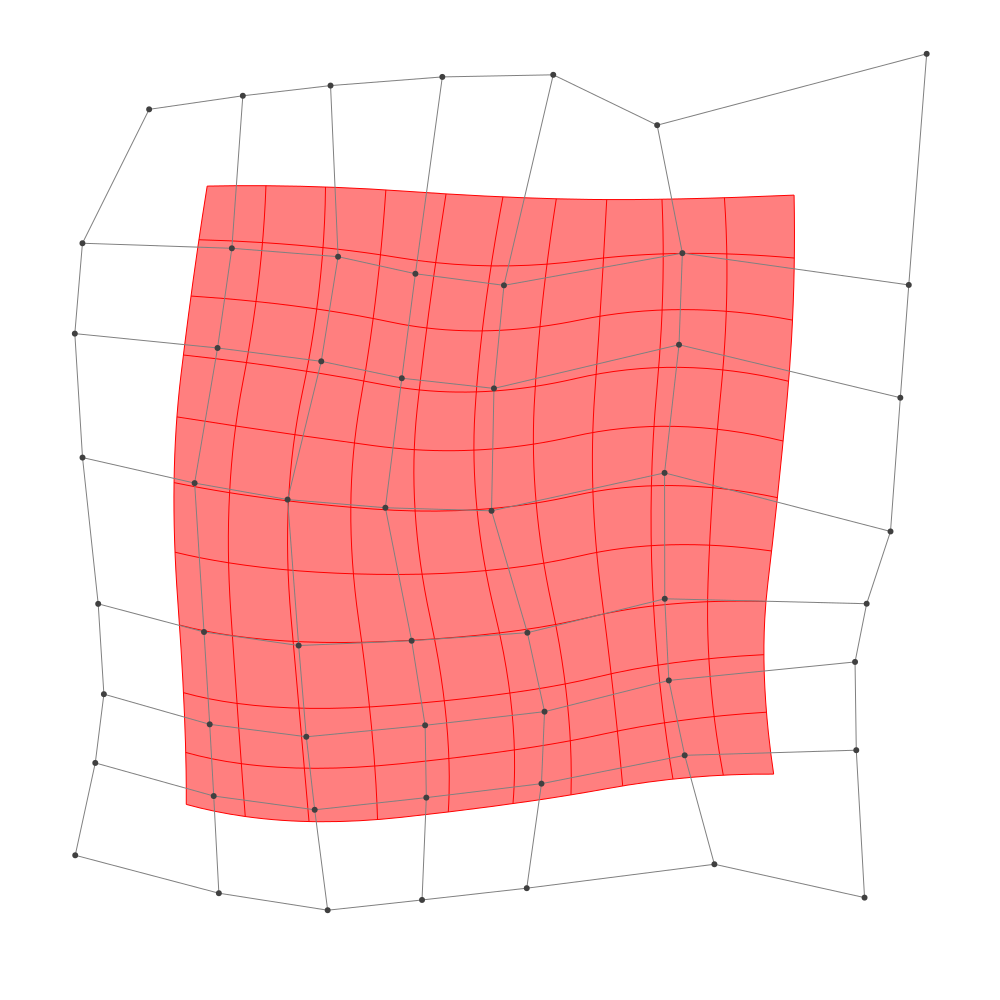
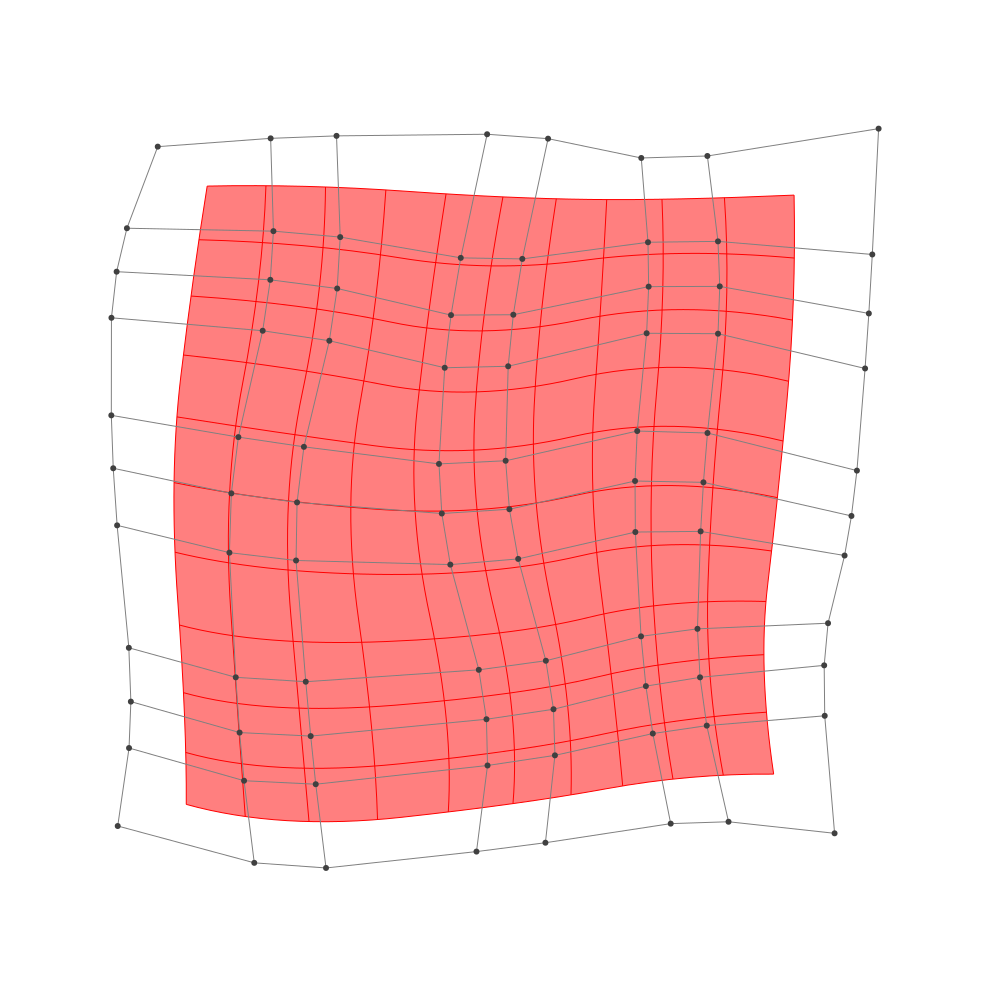

Refinement
BasicBSpline.refinement — FunctionRefinement of B-spline manifold with given B-spline spaces.
julia> p = 2 # degree of polynomial2julia> k = KnotVector(1:8) # knot vectorKnotVector([1, 2, 3, 4, 5, 6, 7, 8])julia> P = BSplineSpace{p}(k) # B-spline spaceBSplineSpace{2, Int64}(KnotVector([1, 2, 3, 4, 5, 6, 7, 8]))julia> rand_a = [SVector(rand(), rand()) for i in 1:dim(P), j in 1:dim(P)]5×5 Matrix{StaticArrays.SVector{2, Float64}}: [0.252306, 0.947105] [0.586471, 0.486254] … [0.991358, 0.406643] [0.462102, 0.363756] [0.14995, 0.0268306] [0.432765, 0.615352] [0.559087, 0.591608] [0.88652, 0.325578] [0.916933, 0.807816] [0.643862, 0.857536] [0.14901, 0.673105] [0.0716407, 0.248233] [0.145413, 0.523763] [0.00763084, 0.980951] [0.766779, 0.961611]julia> a = [SVector(2*i-6.5, 2*j-6.5) for i in 1:dim(P), j in 1:dim(P)] + rand_a # random5×5 Matrix{StaticArrays.SVector{2, Float64}}: [-4.24769, -3.55289] [-3.91353, -2.01375] … [-3.50864, 3.90664] [-2.0379, -4.13624] [-2.35005, -2.47317] [-2.06723, 4.11535] [0.0590873, -3.90839] [0.38652, -2.17442] [0.416933, 4.30782] [2.14386, -3.64246] [1.64901, -1.82689] [1.57164, 3.74823] [3.64541, -3.97624] [3.50763, -1.51905] [4.26678, 4.46161]julia> M = BSplineManifold(a,(P,P)) # Define B-spline manifoldBSplineManifold{2, (2, 2), StaticArrays.SVector{2, Float64}, Tuple{BSplineSpace{2, Int64}, BSplineSpace{2, Int64}}}((BSplineSpace{2, Int64}(KnotVector([1, 2, 3, 4, 5, 6, 7, 8])), BSplineSpace{2, Int64}(KnotVector([1, 2, 3, 4, 5, 6, 7, 8]))), StaticArrays.SVector{2, Float64}[[-4.247694482369499, -3.5528948459799086] [-3.913528567555231, -2.0137464159375664] … [-4.293206964938903, 2.3312275739577744] [-3.5086417754032198, 3.9066427049002104]; [-2.037897944791535, -4.136243510439857] [-2.3500502905862755, -2.473169429079309] … [-1.843442806578453, 2.2030129351363605] [-2.0672346210544967, 4.115352137473797]; … ; [2.1438621123539425, -3.6424639432610073] [1.649010067747573, -1.8268947328182066] … [1.8681338886864505, 2.2427726480266315] [1.5716407141767978, 3.7482326861320168]; [3.6454133882541346, -3.9762373095496697] [3.507630841728358, -1.5190493679826593] … [4.05622307481703, 1.7427570814154039] [4.266779245041621, 4.461611160348172]])
h-refinemnet
Insert additional knots to knot vector.
julia> k₊=(KnotVector(3.3,4.2),KnotVector(3.8,3.2,5.3)) # additional knotvectors(KnotVector([3.3, 4.2]), KnotVector([3.2, 3.8, 5.3]))julia> M_h = refinement(M,k₊=k₊) # refinement of B-spline manifoldBSplineManifold{2, (2, 2), StaticArrays.SVector{2, Float64}, Tuple{BSplineSpace{2, Float64}, BSplineSpace{2, Float64}}}((BSplineSpace{2, Float64}(KnotVector([1.0, 2.0, 3.0, 3.3, 4.0, 4.2, 5.0, 6.0, 7.0, 8.0])), BSplineSpace{2, Float64}(KnotVector([1.0, 2.0, 3.0, 3.2, 3.8, 4.0, 5.0, 5.3, 6.0, 7.0, 8.0]))), StaticArrays.SVector{2, Float64}[[-4.247694482369499, -3.5528948459799086] [-4.047194933480938, -2.6294057879545027] … [-4.17552218650855, 2.5675398435991394] [-3.5086417754032198, 3.9066427049002104]; [-2.8113267329438223, -3.932071477878875] [-2.862891305692775, -2.960251415839369] … [-2.6814902914654013, 2.517050425326233] [-2.57172712507655, 4.042303836073042]; … ; [2.1438621123539425, -3.6424639432610073] [1.8469508855901209, -2.553122416995327] … [1.8236599125100026, 2.468591653742439] [1.5716407141767978, 3.7482326861320168]; [3.6454133882541346, -3.9762373095496697] [3.5627438603386685, -2.501924544609463] … [4.087806500350719, 2.150585193255319] [4.266779245041621, 4.461611160348172]])julia> save_png("2dim_h-refinement.png", M_h) # save image

Note that this shape and the last shape are identical.
p-refinemnet
Increase the polynomial degree of B-spline manifold.
julia> p₊=(1,2) # additional degrees(1, 2)julia> M_p = refinement(M,p₊=p₊) # refinement of B-spline manifoldBSplineManifold{2, (3, 4), StaticArrays.SVector{2, Float64}, Tuple{BSplineSpace{3, Int64}, BSplineSpace{4, Int64}}}((BSplineSpace{3, Int64}(KnotVector([1, 2, 3, 3, 4, 4, 5, 5, 6, 6, 7, 8])), BSplineSpace{4, Int64}(KnotVector([1, 2, 3, 3, 3, 4, 4, 4, 5, 5, 5, 6, 6, 6, 7, 8]))), StaticArrays.SVector{2, Float64}[[-3.8227835082616486, -3.26016894707439] [-3.709560405905263, -2.4802675944433674] … [-3.7307865163287293, 2.7177507531979397] [-3.4225336718951977, 3.533535324618741]; [-2.457305526644507, -3.628413781494655] [-2.5595218444911243, -2.80720387842423] … [-2.265669911423717, 2.6884283392161636] [-2.293536068327428, 3.616520934435299]; … ; [2.285285542939074, -3.2174664212349096] [2.0676153121426046, -2.256213588419824] … [2.179819182111394, 2.586359814818914] [2.073826706917755, 3.4402060039405553]; [3.345831309885969, -3.3330455435733164] [3.247184245116362, -2.1579198003834943] … [3.723053530320821, 2.4552484438826596] [3.7860775033719296, 3.713559313280095]])julia> save_png("2dim_p-refinement.png", M_p) # save image

Note that this shape and the last shape are identical.